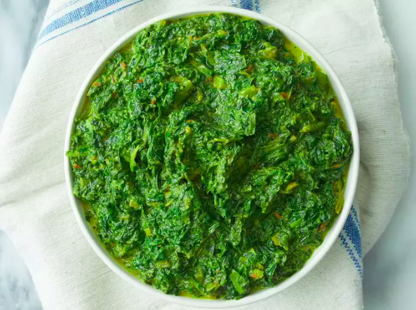

Indian Saag

Description
Indian saag is a curry of cooked mustard or similar bitter greens (kale, collards, turnip greens) and spinach or similar mild greens (chard, bok choy, beet greens).
Any combination of greens works! Use more spices and peppers for hot saag or less for mild.
Ingredients
- ½ cup butter
- 2 tablespoons ground turmeric
- 2 teaspoons cumin seed
- 1 green chile pepper, seeded and diced
- 2 cloves garlic, chopped
- 1 pound chopped fresh mustard greens
- 1 pound chopped fresh spinach
- 1 teaspoon ground cumin
- 1 teaspoon ground coriander
- 1 teaspoon salt